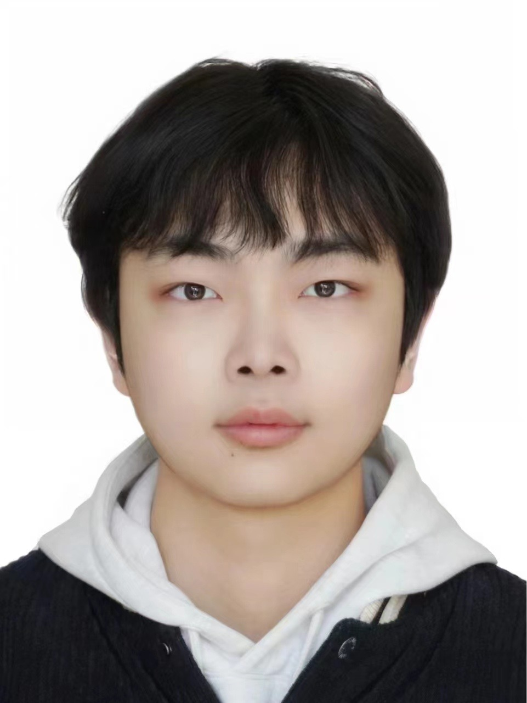

|
I am a Master's student specializing in Computer Vision and Robotics at the National University of Singapore (NUS), focusing on object detection, 3D vision, and the real-world applications of computer vision techniques in robotics and intelligent systems. I earned my B.Eng. in Aircraft Control and Information Engineering from Beihang University in 2024, where I graduated with distinction. I have authored multiple high-impact publications in computer vision and robotics, demonstrating innovative approaches in resource-constrained environments. My work spans SLAM systems, 3D scene reconstruction, and drone-based & underwater object recognition, emphasizing efficiency and scalability. I am passionate about advancing the field of computer vision through interdisciplinary collaboration and developing scalable, intelligent solutions that integrate machine perception into diverse industrial applications. I also serve as a reviewer for renowned conferences and journals, including ICRA, and BDMA. |
 |
{kind=link}
|
|

|
Dongli Wu, Co-authors, Paper / Code This project tackles the challenge of efficient 3D scene reconstruction for robotics using advanced depth estimation and real-time processing techniques. |
Internships
Ai2Robotics 智平方科技
NeRF for Driving Scenes
AMD
End-to-end Driving at Scale
NIO 蔚来汽车
3DGS for Driving Scenes
Miscellaneous
Friends (click to expand, random order)
|
Last updated: Dec. 2023
|